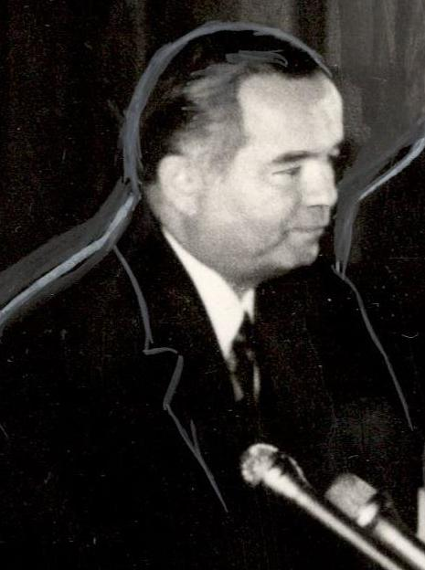

The Creation of the Uzbek Presidency: Islam Karimov's Rise to Power (1989–1990)
On 23 June 1989 Islam Karimov became First Secretary of the Communist Party of Uzbekistan, and on 24 March 1990 he was elected President of the Uzbek SSR — the first such office created among the Soviet republics. Here is the history of those two dates.

The office of President in Uzbekistan was created before independence — while the republic was still part of the Soviet Union. Islam Karimov was at the center of this process: he became First Secretary of the Communist Party of Uzbekistan on 23 June 1989, and President of the Uzbek SSR on 24 March 1990. In this way Karimov became the republic's effective leader, and these offices were an important stage on the road to independence (Source: Wikipedia — 1990 Uzbek Presidential Election; Wikipedia — Islam Karimov).
June 1989: party leader
Karimov was elected First Secretary of the Communist Party on 23 June 1989, succeeding his predecessor Rafiq Nishonov. Nishonov had held the post for 17 months, from 12 January 1988 to 23 June 1989. His removal followed his failure to contain inter-ethnic clashes in the Fergana Valley: in late May and early June 1989 violence against Meskhetian Turks flared across several parts of the valley, with a further wave beginning on 3 June. It was in those unstable conditions that Karimov came to lead the republic (Source: Wikipedia — Rafiq Nishonov; Wikipedia — Fergana Massacre; RFE/RL).
24 March 1990: the presidency is created
On 24 March 1990 the deputies of the 12th convocation of the Supreme Soviet of the Uzbek SSR created the office of President and elected Islam Karimov the first President of the Uzbek SSR. According to the sources, the Uzbek SSR was the first of the Soviet Union's republics to establish the offices of President and Vice-President. Shukrulla Mirsaidov was elected Vice-President the same day; Karimov continued to hold the post of First Secretary in parallel with the presidency (Source: Wikipedia — 1990 Uzbek Presidential Election).

The election in figures
The 1990 election was held on an uncontested basis, with a single candidate; it was the first and last presidential election in the history of the Uzbek SSR. According to official figures, 498 of 500 deputies took part in the vote (99.6%), and 491 of them (98.2%) supported Karimov's candidacy. He began his new duties the same day. The vote took place amid Gorbachev-era perestroika, at the time an all-Union presidency was being created in the USSR (Source: Wikipedia — 1990 Uzbek Presidential Election).
What came next
After the presidency elected by the Supreme Soviet, events moved quickly. Uzbekistan declared its state independence on 31 August 1991, and on 29 December 1991 the first direct presidential election and an independence referendum were held by popular vote. Thus the presidency formed through the Supreme Soviet in 1989–1990 was later confirmed by a nationwide vote (Source: Wikipedia — Islam Karimov; RFE/RL).
Why these dates matter
23 June 1989 and 24 March 1990 were important intermediate points in the formation of Uzbek statehood: the institution of the presidency arose at this moment — still within the Soviet system — and later became the central form of government of the independent state. This article presents only verified dates and figures; it offers no judgments or interpretation (Source: Wikipedia — 1990 Uzbek Presidential Election; Wikipedia — Islam Karimov).